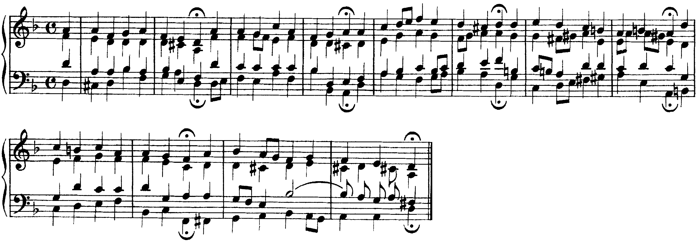
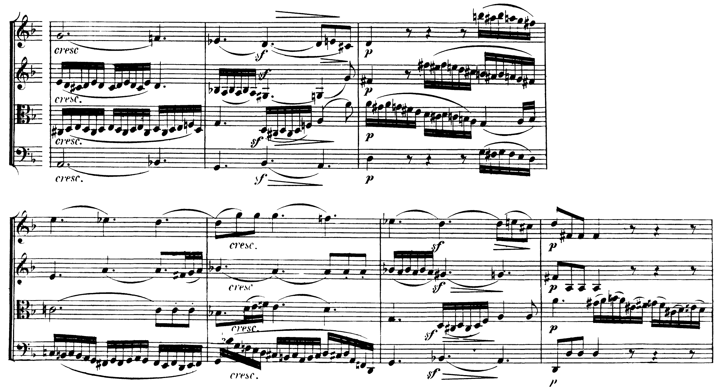

In una melodia la modulazione si sente da una nota nuova e da una clausola. Da lì si conta dalla tonica nuova: la stessa nota cambia grado, e il dettato si scrive con il riferimento spostato.
Il riconoscimento di questi elementi, presenti anche solo in parte e con maggiore o minore evidenza a seconda del brano, ci consente di individuare una modulazione anche attraverso l’analisi della sola linea melodica di un brano.
D. D’Urso, C. Bertolini, Il linguaggio della musica, 4° anno, p. 228
Lezione di due ore. Seconda ora: La sesta napoletana: il secondo grado abbassato, in primo rivolto. I compiti per casa sono alla fine.
C1La modulazione ai toni vicini, lezioni 1–4, pp. 228–243: melodie modulanti alla relativa, alla dominante, alla sottodominante e agli altri toni vicini, con il profilo scalare e con i salti nell’accordo di dominante; gli ascolti delle attività alle pp. 295–296.
Lo spostamento si riflette nella melodia «con la presenza di note estranee alla tonalità di partenza, che abbiamo chiamato suoni caratteristici»: di solito «una nuova sensibile (7) ottenuta con l’alterazione ascendente di un grado», al IV del maggiore e al VI del minore «una nuova controsensibile (4)» ottenuta abbassando un grado. La tonalità nuova è poi confermata da una cadenza e dalle clausole, fra cui la clausola di soprano 7–1 (D’Urso, Bertolini, p. 228). Dionisi aggiunge le «tirature» di una scala e i suoni su cui la melodia insiste (p. 52).
| Dal maggiore | Si sente | Dal minore | Si sente |
|---|---|---|---|
| V | il 4+ che sale al 5 | III, la relativa | il 7 naturale: la sensibile non c’è più |
| vi | il 5+ che sale al 6 | v | il 6+ e il 4+ |
| IV | il 7− che scende al 6 | iv | il 3+ (e il 2−) |
| ii, iii | l’1+, il 2+ | VI, VII | il 2−; il 6+ |
Contare i gradi dalla vecchia tonica dopo la modulazione: gli intervalli escono giusti e le altezze sbagliate. Dalla nota nuova in poi si conta dalla tonica nuova. Scrivere l’alterazione con il nome sbagliato: la sensibile di si è la♯, non si♭. Non sentire la relativa, perché non porta note nuove: la decide la clausola.
La b. 3 sale con il si♮, la sensibile di do, e la b. 4 chiude con la clausola si–do. La b. 5 riporta il si♭; il do♯ della b. 6, sensibile di re, porta alla clausola do♯–re della b. 8: re minore, la relativa di fa. Contati nei toni d’arrivo, il si♮ è il 7 di do e il do♯ il 7 di re.
Due ascolti senza rigo: una crocetta su ogni nota nuova, il tono di ogni chiusa. Poi si canta con il nome delle note, e una seconda volta con i numeri dei gradi, cambiando tonica dopo ogni crocetta.

Due ascolti. Al primo, alzare la mano sul si♮; al secondo, scrivere per ogni corona il grado della nota finale nel tono del verso.
Il corale analizzato all’ora 41, ascoltato seguendo solo la melodia. Il do♯ della b. 6 è la sensibile di re; il si♮ dell’ultimo movimento della b. 7 è la prima nota nuova, e alla b. 8 la melodia chiude con si–la sul la: contato in la minore, è 2–1. Il si♮ torna alla b. 9 (si–do, 7–1 di do), e la b. 10 chiude con sol–fa, 2–1 di fa; il si♭ della b. 11 riporta a re.
Un rigo con chiave, armatura e metro, la prima nota data, le stanghette di otto battute. Sotto il rigo una striscia per i gradi: si scrivono nel tono in cui si è, e dopo ogni crocetta si ricomincia a contare dalla tonica nuova.
Mettere la crocetta sulla cadenza invece che sulla nota nuova: il tono cambia prima, e le note fra la crocetta e la cadenza vanno contate già nel tono d’arrivo.
Sotto la melodia dell’allenamento scrivere i gradi: in fa fino al si♮, in do fino al si♭, in re minore dal do♯. Cerchiare le note che cambiano grado restando le stesse.
La sensibile del tono d’arrivo, o la controsensibile; alla relativa del minore, la sensibile che manca.
7–1 o 2–1 alla chiusa: conferma il tono, anche quando la nota nuova non c’è.
Dalla crocetta si conta dalla tonica nuova: la stessa nota cambia grado.
La lezione si chiude con il solfeggio (parlato, cantato, ritmico) e con una melodia modulante da scrivere per casa. Il 22 gennaio la V3: ritardi e modulazione ai toni vicini.
Un accordo maggiore costruito sul secondo grado abbassato, quasi sempre con la terza al basso: nel minore porta alla cadenza una nota che non appartiene alla scala e che deve scendere.
La triade maggiore la cui fondamentale è il secondo grado abbassato cromaticamente è conosciuta come sesta napoletana.
W. Piston, Armonia, p. 396
Cadenza con sesta napoletana: D. D’Urso, Il linguaggio della musica, 3° anno, lezione 39, pp. 94–95. Il profilo melodico napoletano: D’Urso, Bertolini, 4° anno, p. 38.
«Una triade costruita sul secondo grado abbassato, il grado che caratterizza la scala minore napoletana. Questa triade, che è una variante dell’accordo di ii° del minore, è usata prevalentemente in primo rivolto, come l’accordo da cui deriva, e per questo è nota con il nome di sesta napoletana»; ha funzione di sottodominante e «si presenta normalmente con il 2° abbassato al soprano» (D’Urso, 3° anno, p. 94). Piston la indica con N e osserva che, pur essendo una triade maggiore, «l’alterazione cromatica del secondo grado dà a tale nota una tendenza discendente, come se essa fosse una dissonanza»; «benché derivi dalla scala minore e sia usata soprattutto in modo minore, la sesta napoletana viene usata liberamente anche in maggiore» (Armonia, p. 396). In la minore: re–fa–si♭, con il re al basso. Nel libro la cifratura è II6 con il segno di abbassamento; qui N6.
Il raddoppio. «Come nell’accordo di ii° il raddoppio migliore corrisponde alla terza dell’accordo (4°), cioè alla nota del basso» (D’Urso, 3° anno, p. 95); per Piston il basso, «in quanto grado forte, è il migliore raddoppio possibile» (p. 396). Il 2° abbassato non si raddoppia. Le due strade verso la dominante. Con la quarta e sesta in mezzo il 2° abbassato scende di semitono all’1° (si♭–la), e «la falsa relazione in questo caso non è avvertibile» (Piston, p. 398). Direttamente sul V il 2° abbassato scende alla sensibile con un intervallo di terza diminuita, «dal carattere fortemente drammatico e ricco di tensione» (D’Urso, p. 95); è la condotta che Piston considera preferita, e la falsa relazione che ne nasce (si♭ e poi si♮ in un’altra voce) «non è stata evitata dai compositori»; se il V ha la settima, se ne può omettere la quinta, «cosicché non si verifica alcuna falsa relazione» (p. 397).
Nella prima frase la napoletana nasce sopra il basso del iv: il re resta fermo, il la del contralto sale al si♭ (b. 2), e l’accordo diventa re–fa–si♭ con il re raddoppiato fra basso e soprano, dove il re sta dall’inizio della battuta. Alla b. 3 il si♭ scende al la della quarta e sesta, che lo tiene ancora un movimento prima che la dominante lo porti al sol♯ e la cadenza si chiuda. Nella seconda frase il si♭ sta al soprano: alla b. 6 va direttamente al sol♯ del V, con la terza diminuita, e il si♮ del tenore ne è la falsa relazione; il V non chiude, va al VI (cadenza d’inganno), e la napoletana torna alla b. 7 per la cadenza perfetta con la quarta e sesta.
Raddoppiare il si♭: due voci con la stessa tendenza discendente arrivano insieme al la, per ottave parallele. Farlo salire al si♮ nella stessa voce: la nota abbassata contraddice la propria direzione. Scrivere la triade in stato fondamentale, con il si♭ al basso: il basso salta di tritono o di quarta eccedente verso il mi, e l’accordo smette di suonare come una sottodominante.
Segui il violino I e indica le due battute in cui il mi♭ scende al re.

La b. 82 sta sul la del violoncello, con il violino II e la viola che girano intorno a re e do♯ e il sol del violino I: è la dominante con la settima. Sull’ultimo movimento il basso sale al si♭ e la dominante passa al VI. Il primo movimento della b. 83 è la sesta napoletana nella forma del libro: sol al violoncello e alla viola, cioè la terza raddoppiata, si♭ al violino II (con la nota di volta la), e il secondo grado abbassato, mi♭, nella voce più acuta. Il mi♭ scende di semitono al re sul secondo movimento, mentre il basso sale al si♭ e poi al la: l’accordo di mezzo, si♭–re–sol♯, è una sesta eccedente, l’argomento della lezione 2. Sul la il violino I tiene il re come ritardo della terza e lo risolve sul do♯ (4–3), e la b. 84 chiude su re maggiore, con il fa♯: la napoletana del minore conduce qui a una tonica maggiore. Le bb. 85–88 ripetono il gesto; il canto scende mi–mi♭–re per semitoni e la b. 87 riporta la stessa successione, sol–si♭–la al basso, con il mi♭ un’ottava sopra.
Leggere il sol al basso come un iv. Sopra il sol suonano si♭ e mi♭, non si♭ e re: il mi♭ è il secondo grado abbassato, e l’accordo è la napoletana in primo rivolto. A decidere è la nota acuta, non il basso.
Scrivi contralto e tenore.
La triade maggiore sul 2° abbassato, in primo rivolto: il 4° al basso, la sottodominante del minore con un colore più scuro.
La terza, cioè il basso. Il 2° abbassato una volta sola.
Il 2° abbassato scende: all’1° sopra la quarta e sesta, o alla sensibile, di terza diminuita, sopra il V.
La lezione si chiude con il solfeggio (parlato, cantato, ritmico) e con un basso di otto battute per casa. La lezione 2 presenta le seste eccedenti, che nella b. 83 di Beethoven seguono la napoletana.
Compiti per la prossima volta
Realizza il basso a quattro parti.
Sul quaderno, a matita. La foto del lavoro finito va su Classroom. Nel Workbook: apri l’esercizio 7.1 ↗
Compiti per la prossima volta
n. 465 e n. 466 parlato · n. 467 endecalineo · n. 468 e n. 469 cantato · n. 470 e n. 471 ritmico
Ogni pezzo a tempo, senza fermarti: il parlato a nomi, il cantato prendendo il primo suono dalla tastiera, il ritmico battendo la pulsazione.
Scrivi la linea del basso sul quaderno, in chiave di basso: otto battute in 4/4, la minore. Il primo suono è do. Prima il riferimento, poi tutto due volte, ogni coppia di battute due volte, il collegamento 1–4, 3–6 e 5–8, e tutto per controllare.
Il riferimento: accordo di tonica e primo suono
Il dettato · otto battute
Le sezioni (riferimento, tutto, le coppie, il collegamento) si ascoltano una per una e si ripetono quanto serve; le fasi fanno la procedura della classe, con gli annunci e le pause, da qualunque punto.
Sul quaderno scrivi in testa la sigla C4-D-U07-L1. Si corregge all’inizio della prossima lezione.
Compiti per la prossima volta
Scrivi un contrappunto di quinta specie (il contrappunto fiorito) sotto il canto fermo, in modo dorico (finale re): dieci battute. Comincia su una consonanza perfetta, alla cadenza la sensibile sale alla finale, niente quinte e ottave consecutive.
Sul quaderno, con la sigla C4-CP-U07-L1 in testa; la foto va su Classroom.
Realizza a quattro parti il basso senza numeri: dodici battute in 4/4, la maggiore. Trova tu l’accordo di ogni nota (la regola dell’ottava è il punto di partenza) e scrivilo sotto; poi il soprano, poi le voci interne. Accordi che puoi usare: anche le settime secondarie (ii7) e la V7 della dominante.
Sul quaderno, con la sigla C4-BD-U07-L1 in testa; la foto va su Classroom.
Armonizza a quattro parti il canto dato: dodici battute in 4/4, si♭ maggiore. Prima le cadenze, poi il basso per intero, e solo alla fine contralto e tenore. Accordi che puoi usare: anche le settime secondarie (ii7) e la V7 della dominante.
Sul quaderno, con la sigla C4-CD-U07-L1 in testa; la foto va su Classroom.
Scritto: Un basso di otto battute (Workbook, esercizio 7.1), sul quaderno; la foto va su Classroom. Solfeggio dal quaderno di lettura: parlato n. 465, 466; endecalineo n. 467; cantato n. 468, 469; ritmico n. 470, 471 (a tempo, senza fermarsi). Dettato C4-D-U07-L1 dalla pagina della lezione (sezioni da ascoltare, o le fasi della procedura guidata), sul quaderno con la sigla. Contrappunto di quinta specie sul canto fermo (C4-CP-U07-L1). Basso senza numeri da realizzare a quattro parti (C4-BD-U07-L1). Canto dato da armonizzare a quattro parti (C4-CD-U07-L1).
In classe
A nomi, a tempo, con la mano che batte. Chi si ferma riparte dalla battuta dopo.
Apri il n. 460 nel quaderno di lettura ↗ chiave di contralto · 4/4 · do maggiore
In classe
A nomi, a tempo, sul doppio rigo: prima si trovano con gli occhi i passaggi da una chiave all’altra.
In classe
Si prende il tono dalla tastiera, si canta insieme; poi a gruppi.
Apri il n. 462 nel quaderno di lettura ↗ chiave di violino · 3/4 · re minore
Apri il n. 463 nel quaderno di lettura ↗ chiave di violino · 3/4 · do maggiore
In classe
Tutti insieme, battendo la pulsazione. Poi a file, due battute a testa.